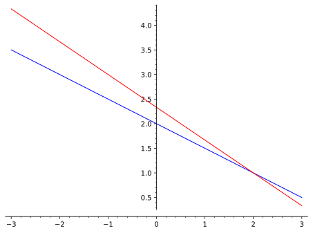
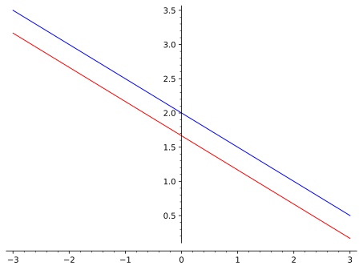
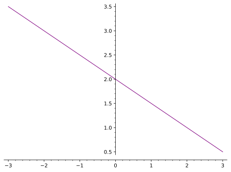
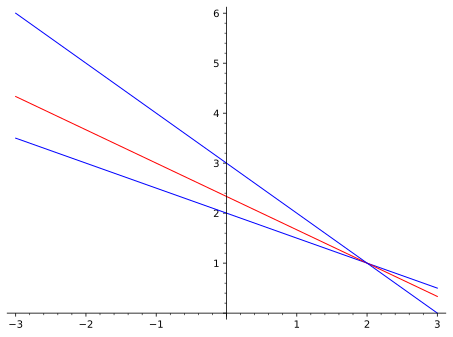

Un système d'équations linéaires (SEL) est un ensemble d'équations comprenant un certain nombre de variables qui sont multipliées par des constantes. Par exemple, les équations
\begin{align*}
x+y&=1\\
x-y&=2
\end{align*}
forment un système d'équations linéaires, tout comme
n'est pas linéaire, dû à la présence des termes \(x^2,\sin(x)\) et \(e^y\text{.}\)
Dans cette section, on définit la notion de système d'équations linéaires, la matrice associée à un tel système et on explore la résolution de ces systèmes à l'aide de la méthode de Gauss-Jordan.
Sous-section3.1.1Définition et exemples simples
On considère les solutions \((x,y)\) qui satisfont la paire d'équations
C'est un système d'équations linéaires à deux équations et à deux inconnues. On y reconnait aussi les équations normales (1.3.6) de deux droites de \(\R^2\text{.}\) Satisfaire ces deux équations simultanément serait donc équivalent à trouver l'intersection des deux droites. On peut ainsi se poser la question, étant données deux droites de \(\R^2\text{,}\) de combien de façons peuvent-elles être configurées? Combien de points d'intersection y a-t-il dans chaque cas?
Pour illustrer les autres possibilités, on change le SEL précédent en remplaçant le \(3y\) de la seconde équation pour un \(4y\text{.}\) On a donc le système
\begin{align*}
x+2y&=4\\
2x+4y&=7
\end{align*}
et les deux sont maintenant parallèles et distinctes (les vecteurs normaux sont parallèles).
Si, à partir de ce deuxième système, on change le \(7\) pour un \(8\text{,}\) on obtient
On remarque que la seconde équation n'est rien d'autre que la première multipliée par \(2\text{.}\) Les deux droites sont donc en fait la même droite, puisqu'on peut simplifier l'écriture de l'une pour obtenir l'autre. On peut aussi les voir comme des droites parallèles confondues. Ces trois cas sont en fait les seules possibilités pour un SEL à deux équations et à deux inconnues. Ils sont illustrés aux figures 3.1.1–3.1.2.
Figure3.1.1.Des droites sécantes dans \(\R^2\text{.}\)
Figure3.1.2.Des droites parallèles distinctes dans \(\R^2\text{.}\)
Figure3.1.3.Des droites parallèles confondues dans \(\R^2\text{.}\)
Qu'en est-il du cas trois équations et trois inconnues? Puisqu'une équation de la forme \(ax+by+cz=d\) représente l'équation d'un plan dans \(\R^3\text{,}\) on peut voir un système d'équations linéaires à trois équations et trois inconnues comme l'intersection de trois plans dans l'espace. Pour l'intersection de deux droites dans \(\R^2\text{,}\) on avait aucune, une seule ou une infinité de solutions. L'exercice 3.1.4.17 explorera la géométrie des cas possibles pour des plans dans \(\R^3\text{.}\)
Au-delà de la géométrie, on s'intéresse au cas plus général: \(m\) équations linéaires avec \(n\) inconnues. Quelques définitions sont de mise.
Définition3.1.4.Une équation linéaire.
Soit \(x_1,x_2,\ldots , x_n\) des variables. Une équation de ces variables est linéaire si elle est de la forme
où \(a_1,a_2,\ldots a_n,b_1\in\R\text{.}\) Si on pose \(\vec{a}=(a_1,a_2,\ldots ,a_n), \vec{x}=(x_1,x_2,\ldots ,x_n)\text{,}\) il est possible de réécrire l'équation comme \(\pscal{a}{x}=b_1\text{.}\)
Définition3.1.5.Système d'équations linéaires.
Un système d'équations linéaires (SEL) est un ensemble de \(m\) équations linéaires comportant chacune \(n\) inconnues. Typiquement, on écrira
En posant \(\vec{a}_1=(a_{1\, 1},a_{2\,1},\ldots , a_{m\,1}),\vec{a}_2=(a_{1\, 2},a_{2\,2},\ldots , a_{m\,2}),\ldots,\vec{a}_n=(a_{1\, n},a_{2\,n},\ldots , a_{m\,n}),\vec{b}=(b_1,b_2,\ldots , b_m)\text{,}\) on reconnait dans le SEL la multiplication matrice et vecteur (2.1.7). Donc pour
Si on pose \(A=\matcold{1}{2}{2}{3}, B=\matcold{1}{2}{2}{4},\vec{b}=\vecd{4}{7}\) et \(\vec{c}=\vecd{4}{8}\text{,}\) les SELs s'écrivent respectivement comme
Soit \(A=\matcolt{1}{2}{-1}{3}{2}{0}{1}{-4}{2}\text{.}\) On cherche à écrire trois systèmes d'équations linéaires qui permettent de déterminer l'inverse de \(A\text{.}\)
Ces réponses représentent un système d'équations linéaires sous leur forme actuelle et répondent à la question, mais pour montrer la forme en équations, on peut effectuer les multiplications. Les trois systèmes deviennent alors
Dans ce système, on peut directement lire la valeur de la variable \(y\text{,}\) soit \(y=1\text{.}\) En la remplaçant dans la première équation, on peut ensuite trouver \(x=2\text{.}\) Un tel système est dit triangulaire.
Finalement, on considère à nouveau le SEL du début de section :
Une vérification rapide montre que le couple \(x=2,y=1\) satisfait cette paire d'équations. Plusieurs méthodes peuvent être utilisées pour résoudre ce système, par exemple, par comparaison, par substitution, par réduction ou par une combinaison de ces trois techniques.
Le but de cette section est de développer une méthode générale, par le biais d'un algorithme qui permettra de trouver la ou les solutions à n'importe quel système d'équations linéaires. De plus, si le système n'a aucune solution, la méthode le dira.
Ce système est identique au précédent, mais l'ordre des équations a été inversé. On s'attend toutefois à ce que la solution trouvée soit encore valide.
devrait aussi posséder la même solution, puisqu'en divisant la première équation par \(2\) et la seconde par \(-1\) on obtient le système précédent. Une simple vérification permet de constater que \(x=2,y=1\) est bel et bien une solution.
Ce système a la même première équation que le premier système, mais la seconde est différente. En fait, géométriquement, c'est une toute autre droite. Pourtant, la solution \(x=2,y=1\) est encore valide. Les trois droites sont illustrées à la figure 3.1.9.

Figure3.1.9.Les trois droites sécantes en un même point.
Quelqu'un de perspicace aura peut-être remarqué que si on soustrait l'équation (3.1.2) à l'équation (3.1.3), on obtient l'équation (3.1.4). On peut faire ici l'hypothèse que si on additionne (ou soustrait) à une ligne un multiple d'une autre ligne, la solution ne change pas. On détaillera cette propriété sous peu.
Définition3.1.10.Les opérations élémentaires.
On considère un système d'équations linéaires quelconque à \(m\) équations et \(n\) inconnues. Les trois opérations suivantes sont appelées les opérations élémentaires:
Interchanger la position de deux équations;
Multiplier une équation par une constante non nulle;
Ajouter à une équation un multiple d'une autre.
Si \(A\) est la matrice du système, alors les trois opérations élémentaires se traduisent en forme matricielle par:
Interchanger la position de deux lignes;
Multiplier une ligne par une constante non nulle;
Ajouter à une ligne un multiple d'une autre.
Un SEL (ou une matrice) qui s'obtient à partir d'un autre par une suite d'opérations élémentaires est dit équivalent à ce dernier. Si une matrice \(A\) est équivalente à \(B\text{,}\) on écrit \(A\sim B\text{.}\)
On tente de résoudre ce système en le transformant en un plus simple, à l'aide des opérations élémentaires. La proposition 3.1.12 viendra justifier ces étapes, et l'algorithme de Gauss-Jordan 3.1.25 saura donner une manière méthodique derrière les étapes effectuées ici. L'algorithme clarifiera aussi quand il est convenable d'arrêter.
On effectue finalement une dernière étape qui consiste à multiplier la ligne trois par \(-\frac{2}{3}\text{,}\) pour avoir le système d'équations linéaires
Même si les étapes pour y arriver ne sont peut-être pas encore claires, on remarque que le SEL est maintenant triangulaire, et qu'on peut lire directement la valeur de la composante \(z\) de la solution, soit \(z=\frac{1}{3}\text{.}\) En substituant dans la seconde équation du SEL, on détermine \(y=0\) et finalement, en remplaçant \(y,z\) dans la première ligne on trouve \(x=\frac{2}{3}\text{.}\)
Une vérification finale permettra de voir que le vecteur \(\left(\frac{2}{3},0,\frac{1}{3}\right)\) est une solution du système original.
La solution de l'exemple précédent montre que si on arrive à transformer un SEL en utilisant les opérations élémentaires, on peut espérer arriver à un SEL équivalent qui sera plus simple à résoudre. Toutefois, des questions demeurent. Est-on assuré que les solutions du nouveau système seront les mêmes que celles du système initial? Qui plus est, si on avait effectué un choix différent d'opérations élémentaires, est-ce qu'on aurait obtenu la même solution? Combien de solutions peut-il y avoir?
La méthode de Gauss-Jordan qu'on présentera à la section 3.1.3 donne une manière algorithmique de trouver toutes les solutions à un SEL, peu importe les opérations élémentaires effectuées. Elle fonctionne entre autres grâce à la proposition suivante.
Proposition3.1.12.Les opérations élémentaires préservent les solutions.
Soit \(A\) et \(B\) deux matrices telles que les systèmes \(A\vec{x}=\vec{b}\) et \(B\vec{y}=\vec{c}\) sont équivalents. Alors l'ensemble solution à ces systèmes est le même.
Il suffit de montrer que chacune des trois opérations élémentaires préservent les solutions.
Dans un premier temps, si les deux systèmes n'ont pas de solution, alors l'ensemble solution est le même, c'est-à-dire que c'est l'ensemble vide. Si toutefois un des systèmes a au moins une solution, on raisonne comme suit.
Il est clair que l'opération d'interchanger deux lignes ne changera pas la solution, puisque ce sont exactement les mêmes équations. Leur position est un choix arbitraire.
Soit \(\vec{u}\) une solution au système \(A\vec{x}=\vec{b}\text{.}\)
On suppose que \(B\vec{y}=\vec{c}\) soit obtenu à partir du premier système en multipliant la ligne \(i\) par la constante \(r\in\R, r\neq 0\text{.}\) Puisque \(\vec{u}\) est une solution à \(A\vec{x}=\vec{b}\text{,}\) on a
Comme les autres lignes du SEL sont les mêmes, on conclut que \(\vec{u}\) est aussi une solution du système \(B\vec{y}=\vec{c}\text{.}\) Si au contraire on connait une solution \(\vec{v}\) au système \(B\vec{y}=\vec{c}\text{,}\) on peut renverser l'ordre du calcul précédent pour montrer que \(\vec{v}\) est aussi une solution au système \(A\vec{x}=\vec{b}\text{.}\)
On suppose maintenant que la ligne \(i\) du système \(B\vec{y}=\vec{c}\) est obtenue en ajoutant \(r\) fois la ligne \(j\) à la ligne \(i\text{.}\) Puisque \(\vec{u}\) est une solution de \(A\vec{x}=\vec{b}\text{,}\) en additionnant \(r\) fois la ligne \(j\) à la ligne \(i\text{,}\) on a
Ainsi, \(\vec{u}\) est aussi une solution du système \(B\vec{y}=\vec{c}\text{.}\) Si au contraire on connait une solution \(\vec{v}\) au système \(B\vec{y}=\vec{c}\text{,}\) on peut renverser l'ordre du calcul précédent pour montrer que \(\vec{v}\) est aussi une solution au système \(A\vec{x}=\vec{b}\text{.}\)
Aussi, l'écriture à chaque ligne de la matrice, du vecteur \(\vecddd{x}{y}{z}\) et du vecteur \(\vec{b}\) était un peu encombrante. On constate en regardant les calculs que seuls la matrice et le vecteur \(\vec{b}\) changent pendant le calcul. On propose la notation suivante, pour simplifier l'écriture.
Définition3.1.13.La matrice augmentée.
Soit \(A\vec{x}=\vec{b}\) un système d'équation linéaire \(m\times n\text{.}\) On définit la matrice augmentée de ce système comme étant la matrice
Lors du calcul d'un SEL équivalent, il est possible de travailler avec la matrice augmentée seulement et de facilement la convertir sous la forme SEL par la suite. Ceci sera illustré dans les exemples subséquents.
Avant de terminer cette sous-section, on montre que les opérations élémentaires peuvent être vues comme étant tout simplement une application du produit matriciel. Cette constatation a des applications plus théoriques que pratiques, mais on en verra l'utilité prochainement.
Définition3.1.14.Les matrices élémentaires.
Considérons la matrice identité d'ordre \(n\text{.}\) Une matrice élémentaire est une matrice obtenue à partir de la matrice identité en lui effectuant une et une seule opération élémentaire.
On regarde les matrices élémentaires associées à l'exemple 3.1.11.
Pour chaque opération élémentaire de l'exemple 3.1.11, on donne la matrice élémentaire associée. Leur utilité sera explorée dans l'exemple calculatoire 3.1.17.
La première opération élémentaire qui a été effectuée était de soustraire le double de la ligne un à la ligne deux. Si on effectue cette opération élémentaire sur la matrice identité, on obtient
En fait, on profite de cet exemple pour introduire un élément de notation. Plutôt que de décrire en mot chaque opération élémentaire effectuée, on utilise l'une des variantes de notation suivante, qu'on écrira au-dessus du symbole \(\sim\text{.}\)
Pour illustrer la permutation de la ligne \(i\) avec la ligne \(j\text{,}\) on utilise la notation \(L_i \leftrightarrow L_j\text{.}\)
Pour illustrer que la ligne \(i\) est mutipliée par la constante non nulle \(r\text{,}\) on utilise la notation \(rL_i\rightarrow L_i\text{.}\)
Finalement, pour illustrer qu'on ajoute \(r\) fois la ligne \(j\) à la ligne \(i\text{,}\) on utilise la notation \(L_i+rL_j\rightarrow L_i\text{.}\)
En poursuivant avec les opérations de l'exemple 3.1.11, on a, dans l'ordre
Chaque opération élémentaire mène donc à une matrice. Qui plus est, ces matrices sont inversibles.
Proposition3.1.16.
Les matrices élémentaires sont toutes inversibles. De plus, si
\(E_{L_i\leftrightarrow L_j}\) est la matrice élémentaire qui change la ligne \(i\) avec la ligne \(j\text{,}\) alors \(E_{L_i\leftrightarrow L_j}^{-1}=E_{L_i\leftrightarrow L_j}\)
\(E_{rL_i}\) est la matrice qui multiplie la ligne \(i\) par \(r\neq 0\text{,}\) alors \(E_{rL_i}^{-1}=E_{\frac{1}{r}L_i}\text{.}\)
\(E_{L_i+rL_j}\) est la matrice élémentaire qui ajoute à la ligne \(i\text{,}\)\(r\) fois la ligne \(j\text{,}\) alors \(E_{L_i+rL_j}^{-1}=E_{L_i-rL_j}\text{.}\)
On termine avec des commandes Sage en lien avec la sous-section.
Calcul3.1.17.Les matrices élémentaires sur Sage.
Les matrices élémentaires peuvent être codées avec Sage. La syntaxe est elementary_matrix(n, row1=i,row2=j, scale=r), où \(n\) est la taille de la matrice carrée. Selon l'opération que l'on veut effectuer, certains arguments ne seront pas utilisés. Par exemple, si on ne met pas \(r\text{,}\) l'opération est d'interchanger les lignes. Si on omet le \(j\text{,}\) l'opération est de multiplier la ligne \(i\) par \(r\) et si les trois arguments sont présents, l'opération est \(rL_j+L_i\rightarrow L_i\text{.}\)
On regarde cela en action, en utilisant les matrices élémentaires de l'exemple 3.1.15.
L'avantage de ces matrices, c'est que les opérations élémentaires peuvent être vues comme la multiplication par la gauche d'une matrice élémentaire. Afin de voir cela, on propose de refaire la simplification de l'exemple 3.1.11 à l'aide des matrices \(E_1\) à \(E_5\text{.}\) On introduit également la matrice augmentée avec Sage.
Comme chacune des étapes suivantes est effectuée après les précédentes, il est important de bien faire les multiplications.
Le résultat est bel et bien le même que la matrice à la fin de l'exemple 3.1.11.
Sous-section3.1.3La méthode de Gauss-Jordan
Dans la dernière sous-section, on a vu que les opérations élémentaires permettent de prendre un système d'équations linéaires et de le transformer en un système équivalent, plus simple. Il serait intéressant d'avoir une méthode applicable dans tous les cas, avec un critère clair pour savoir quand arrêter. Pour cela, on définit la forme échelonnée réduite d'une matrice.
Définition3.1.18.Forme échelonnée réduite d'une matrice.
Soit \(A\) une matrice de taille \(m\times n\text{.}\) Le premier élément non nul de chaque ligne est appelé le pivot de cette ligne.
On dit que \(A\) est échelonnée réduite si elle satisfait chacune des caractéristiques suivantes:
Liste3.1.19.Condition pour être échelonnée réduite
Si la matrice contient des lignes dont toutes les entrées sont nulles (donc sans pivot), ces lignes sont dans le bas de la matrice.
Le pivot de chaque ligne non nulle est égal à \(1\text{.}\)
De haut en bas, les pivots sont à la droite (pas nécessairement directement) les uns des autres.
Les entrées d'une colonne pivot sont toutes égales à \(0\text{,}\) sauf le pivot.
Lorsqu'une matrice est sous la forme échelonnée réduite, la position de ses pivots sera particulièrement importante.
Définition3.1.20.Pivots, variables liées et variables libres.
Soit \(A\) une matrice \(m\times n\) et \(B\) sa forme échelonnée réduite. 1 Si la colonne \(j\) de la matrice \(B\) contient un pivot, on dit que la colonne \(j\) est une colonne pivot pour la matrice \(A\) et que la variable \(x_j\) est une variable pivot, ou liée.
Les variables qui ne sont pas des variables liées sont dites libres.
La notion de variables libres jouera un plus grand rôle dans la sous-section 3.2.1. Pour l'instant, on regarde des exemples de matrices respectant certaines des conditions de la définition 3.1.18 afin de bien comprendre ce concept.
La matrice \(A\) contient une ligne nulle et celle-ci est dans le bas de la matrice. La première condition est donc satisfaite. La deuxième condition n'est pas satisfaite. Le pivot de la première ligne est égal à \(2\) et non à \(1\text{.}\) La condition trois est respectée, car il n'y a qu'un seul pivot. Finalement, la colonne \(1\text{,}\) correspondant au pivot de la première ligne, ne contient que des zéros, sauf pour l'entrée pivot. La condition quatre est donc respectée.
Comme une des quatre conditions n'est pas respectée, la matrice n'est pas échelonnée réduite.
La matrice \(B\) respecte la première condition par défaut, car elle ne possède pas de ligne nulle. De plus les deux pivots sont égaux à \(1\) et le second se trouve à la droite du premier, donc les conditions deux et trois sont respectées. Par contre, la deuxième colonne est pivot et contient des entrées non nulles (le \(2\)) autre que le pivot de la deuxième ligne. Elle ne respecte donc pas la condition quatre.
Comme une des quatre conditions n'est pas respectée, la matrice n'est pas échelonnée réduite.
La matrice \(C\) ne possède pas de ligne nulle, donc elle respecte la condition un. Les pivots sont tous égaux à \(1\text{,}\) ce qui fait que la condition deux est respectée. Par contre, le second pivot est à gauche du premier. La troisième condition n'est donc pas respectée. La dernière condition l'est toutefois, car toutes les colonnes pivots ne contiennent que des zéros aux endroits non pivots.
Comme une des quatre conditions n'est pas respectée, la matrice n'est pas échelonnée réduite.
La matrice \(D\) contient une ligne de zéros, qui se trouve dans le bas de la matrice. La première condition est respectée. De plus, les pivots sont tous égaux à \(1\) et se trouvent à droite les uns des autres, lorsqu'on regarde les lignes de haut en bas. Les conditions deux et trois sont aussi respectées. Finalement, les colonnes pivots \(2\) et \(3\) ne contiennent que des zéros aux endroits non pivots. La condition quatre est donc aussi respectée.
Comme les quatre conditions sont respectées, la matrice est échelonnée réduite.
La matrice \(E\) contient une ligne de zéro, soit la deuxième. Toutefois, la ligne trois contient des entrées non nulles. La première condition n'est donc pas respectée. Il y a deux pivots égaux à \(1\text{,}\) dans la ligne un et dans la ligne trois. Le pivot de la ligne trois se trouvant à droite de celui de la ligne un, les conditions deux et trois sont respectées. Finalement, les colonnes pivots (un et trois) ne contiennent que des zéros aux endroits non pivot. La quatrième condition est aussi respectée.
Comme un des quatre conditions n'est pas respectée, la matrice n'est pas échelonnée réduite.
Remarque3.1.22.Origine du terme "échelon".
Le mot échelonnée dans la forme échelonnée réduite vient d'échelle. On peut en effet percevoir un certain escalier en regardant les pivots d'une matrice échelonnée réduite.
Figure3.1.23.Justification du mot "échelon"
À ce stade-ci, on se doute bien qu'il est possible de transformer une matrice en une matrice équivalente qui sera échelonnée réduite en utilisant les opérations élémentaires. S'il s'avérait que la forme échelonnée réduite d'une matrice était unique, on obtiendrait une façon de savoir quand arrêter les opérations élémentaires.
Proposition3.1.24.La forme échelonnée réduite d'une matrice est unique.
Soit \(A\) une matrice de taille \(m\times n\text{.}\) Par une suite d'opérations élémentaires, on peut arriver à une forme échelonnée réduite. Peu importe le choix des opérations élémentaires ou l'ordre de celles-ci, la forme échelonnée réduite sera toujours la même. Pour cette raison on définit \(rref(A)=erl(A)\) 2 comme étant l'unique forme échelonnée réduite de la matrice \(A\text{.}\)
On utilise une preuve par induction [provisional cross-reference: annexe preuves] sur le nombre de colonnes de la matrice \(A\text{.}\)
Le cas \(n=1\text{:}\) Si la matrice \(A\) n'est qu'un vecteur colonne, alors soit ce vecteur est nul, auquel cas il est déjà sous la forme rref. Toutes les opérations sur les lignes ne change pas le vecteur nul et donc sa forme rref est unique. Si le vecteur n'est pas le vecteur nul, alors il existe au moins une entrée non nulle. On prend la première composante non nulle du vecteur, disons en position \(i\text{.}\) Celle-ci est forcément un pivot de sa ligne. Peu importe sa valeur \(r\neq 0\text{,}\) on peut la normaliser à \(1\) en effectuant l'opétation \(\matsimils{i}{\frac{1}{r}}\text{.}\) Par la suite, chaque entrée non nulle \(s\) en position \(j>i\) peut facilement être transformée en \(0\) à l'aide d'une application de l'opération \(\matsimilc{i}{-s}{j}\text{.}\) Le vecteur obtenu à la suite de ces opérations contient un \(1\) en position \(i\text{,}\) la première entrée non nulle, et doit nécessairement avoir des \(0\) en-dessous. La forme rref est aussi unique dans ce cas.
On suppose que pour une matrice de taille \(m\times n\text{,}\) la forme rref est unique.
Soit \(A\) une matrice de taille \(m\times (n+1)\) et soit \(B,C\) deux matrices échelonnée réduites équivalentes à \(A.\) De plus, on pose \(A^{'}\) la matrice que l'on obtient de \(A\) en supprimant la dernière colonne. Peu importe la chaine d'opérations élémentaires menant à \(B\) ou \(C\text{,}\) la matrice \(A^{'}\) est aussi transformée sous une forme échelonnée réduite lorsque ces opérations sont appliquées à \(A\text{.}\)
Parce que \(A^{'}\) est une matrice de taille \(m\times n\text{,}\) l'hypothèse d'induction affirme que sa forme rref est unique. Donc si \(B\) et \(C\) sont différentes, elle doivent l'être dans la dernière colonne seulement.
On considère maintenant un vecteur \(\vec{x}\) tel que \(A\vec{x}=\vec{0}\text{.}\) On sait qu'au moins le vecteur \(\vec{0}\) est une solution à cette équation, mais pas nécessairement la seule. Dans tous les cas, la proposition 3.1.12 dit que \(B\vec{x}=\vec{0}\) et \(C\vec{x}=\vec{0}\text{.}\) En particulier \((B-C)\vec{x}=\vec{0}\text{.}\) En rappelant l'équation (2.1.7) et le fait que les \(n\) premières colonnes des matrices \(B\) et \(C\) concordent, la seule équation qui reste dans le produit \((B-C)\vec{x}=\vec{0}\) est \(x_{n+1}\vecl{(b-c)}_{n+1}=\vec{0}\text{.}\)
Si \(\vecl{(b-c)}_{n+1}=\vec{b}_{n+1}-\vec{c}_{n+1}=\vec{0}\text{,}\) alors les colonnes \(n+1\) des matrices \(B\) et \(C\) sont aussi égales, donnant \(B=C\) et l'unicité de la forme échelonnée réduite. Sinon, comme les matrices \(B\) et \(C\) sont rref, elles doivent n'avoir que des \(0\) et un \(1\text{.}\) Ce \(1\) est forcément à la même position, car une des conditions d'être rref est que les lignes de \(0\) soit dans le bas de la matrice. Les \(1\) se trouvent donc sous la dernière ligne de \(A^{'}\) ayant un pivot. Dans ce cas aussi, la dernière colonne concorde et on a \(B=C\text{.}\)
Comme les opérations élémentaires préservent les solutions et que la forme échelonnée réduite est unique, la technique choisie pour résoudre un système d'équations linéaires est d'échelonner la matrice augmentée du système jusqu'à sa forme rref. Ceci donne une manière simple 3 de lire la solution. Voici maintenant en détail l'algorithme de Gauss-Jordan.
Algorithme3.1.25.La méthode de Gauss-Jordan.
Soit \(A\) une matrice de taille \(m\times n\text{.}\) Il est possible d'obtenir la forme échelonnée réduite de \(A, rref(A)\text{,}\) en suivant le processus suivant:
Liste3.1.26.Algorithme de Gauss-Jordan
Si \(i\) n'est pas encore défini, on pose \(i=1\text{.}\) Si \(i=m\text{,}\) on saute à l'étape suivante. Sinon, si \(i<m\text{,}\) on augmente \(i\) de \(1\text{.}\)
Si possible, échanger la ligne \(i\) avec une autre ligne (\(j>i\)) de sorte à avoir un pivot non nul dans la colonne la plus à gauche possible.
Si nécessaire, multiplier la nouvelle ligne \(i\) par la constante appropriée pour avoir son pivot égal à \(1\text{.}\)
Utiliser l'opération \(rL_i+L_j\rightarrow L_j\) pour que chaque entrée sous le pivot soit nulle. (\(j<i\)).
Retourner à la première étape.
Pour chaque pivot, utiliser la troisième opération élémentaire pour avoir des zéros au-dessus du pivot.
Remarque3.1.27.L'efficacité de l'algorithme.
Dans certaines étapes de l'algorithme de Gauss-Jordan 3.1.25, il peut être avantageux au niveau des calculs de sélectionner une ligne en particulier plutôt qu'une autre. Aussi, on peut vouloir retarder 3.1.26:1.b afin d'éviter de travailler avec des fractions. L'algorithme décrit une manière automatique d'obtenir la forme échelonnée réduite, un peu comme le ferait un ordinateur.
Également, si on se limite à ne faire que l'étape 3.1.26:1, sans nécessairement avoir les pivots égaux à \(1\text{,}\) on obtient l'algorithme de Gauss. Une matrice ainsi transformée serait alors sous forme échelonnée seulement (pas réduite). L'exemple 3.1.11 était un exemple d'application de l'algorithme de Gauss seulement, soit sans faire l'étape 3.1.26:2.
On illustre maintenant l'algorithme de Gauss-Jordan, en précisant les étapes 3.1.26 pour référence. On ne va pas faire cette correspondance dans le futur.
C'est une matrice \(3\times 4\text{,}\) en comptant la partie augmentée. On a donc \(m=3\text{.}\)
On commence l'algorithme de Gauss-Jordan.
Comme \(i\) n'est pas défini, on pose \(i=1\text{.}\)
Puisque la première colonne contient des valeurs non nulles, ce sera une colonne pivot. Toutefois, l'entrée de la première colonne dans la ligne \(1\) est nulle. Il faut donc permuter deux lignes:
On veut maintenant avoir des \(0\) sous le pivot de la ligne un. Ici, il n'y a qu'une opération à effectuer, car la deuxième ligne a déjà son \(0\text{.}\) On utilise l'opération \(-3L_1+L_3\rightarrow L_3\text{.}\)
Les entrées de la seconde colonne à partir de la ligne deux ne sont pas toutes nulles, il y aura donc un pivot dans la colonne deux. Techniquement, l'algorithme dit de passer à l'étape suivante et de multiplier par \(-\frac{1}{7}\text{.}\) On se sert ici de la remarque 3.1.27 pour simplifier les calculs, en permutant les lignes deux et trois.
Ceci complète l'algorithme de Gauss-Jordan, la matrice étant échelonnée réduite. On peut y lire la solution \((x,y,z)=(4,-1,1)\text{.}\)
On poursuit avec un autre exemple relié à l'exemple 3.1.11. Cette fois-ci, on se contente d'échelonner la matrice en écrivant les opérations élémentaires, sans préciser les étapes de l'algorithme.
en lien avec le système similaire résolu à l'exemple 3.1.11. On cherche les solutions à ces deux systèmes. On remarque qu'en vertu de la proposition 2.3.10, la solution à ces trois systèmes donnera aussi la matrice inverse de \(\matcolt{1}{2}{-1}{3}{2}{0}{1}{-4}{2}\text{.}\)
On peut travailler de manière efficace ici. Dans le sens où, il n'est pas nécessaire d'échelonner la matrice pour chaque système. En effet, peu importe la chaine d'opérations élémentaires effectuées pour échelonner le SEL dans le cas du premier système, cette chaine fonctionnera aussi pour le deuxième SEL. On peut donc augmenter la matrice des deux vecteurs \(\vecddd{0}{1}{0},\vecddd{0}{0}{1}\) et effectuer les opérations sur cette matrice augmentée. De plus, les opérations élémentaires ayant servies à trouver la solution dans l'exemple 3.1.11 peuvent être réutilisées ici, puisqu'elles consistent en l'étape un de l'algorithme de Gauss-Jordan 3.1.25, hormis le fait que les pivots ne sont pas égaux à \(1\text{.}\) Il faut par contre refaire les calculs sur la partie augmentée.
La solution au premier système est donc \(\vecddd{x}{y}{z}=\vecddd{-1}{\frac{1}{2}}{-\frac{1}{2}}\) et celle du second est \(\vecddd{x}{y}{z}=\vecddd{-\frac{7}{3}}{1}{-\frac{2}{3}}\text{.}\) De plus, en reprenant la réponse de l'exemple 3.1.11, on obtient
En combinant plusieurs opérations élémentaires, on obtient une opération valide (généralement pas élémentaire) pour échelonner une matrice. Ainsi, l'opération \(3L_2+5L_1\rightarrow L_2\) peut être vue comme la combinaison des opérations élémentaires \(3L_2\rightarrow L_2\) suivie de l'opération \(5L_1+L_2\rightarrow L_2\text{.}\) Bien qu'elle ne soit pas élémentaire, cette opération peut être pratique pour échelonner des matrices, comme dans l'exemple suivant.
L'opération permet d'obtenir le \(0\) sous le pivot de la ligne un, sans avoir à mettre ce pivot égal à \(1\text{,}\) ce qui aurait introduit une fraction dans la seconde colonne.
Bien que permises, on fait le choix d'éviter ces opérations. On voudra de toute manière déléguer beaucoup des calculs à l'ordinateur. On choisit donc de se concentrer sur les opérations élémentaires. Il est toutefois possible d'éviter les fractions avec les opérations élémentaires, comme dans l'exemple suivant.
Cette opération rend le pivot de la première ligne égal à \(1\) sans créer de fraction dans la deuxième colonne.
Finalement, on peut se permettre de faire plusieurs opérations en une étape, comme lors de l'équation (✶) de l'exemple 3.1.29. Il est par contre important de retenir qu'on ne doit pas utiliser une ligne qui a été modifiée auparavant dans la même étape pour modifier une autre ligne. Voir l'exercice [provisional cross-reference: ex-GJremexo]
On termine avec des commandes Sage en lien avec la sous-section.
Calcul3.1.31.La forme échelonnée réduite sur Sage.
Pour une matrice \(A\) quelconque, on peut obtenir sa forme échelonnée réduite avec Sage à l'aide de la commande A.rref().
Pour résoudre un système d'équations linéaires \(A\vec{x}=\vec{b}\text{,}\) il existe plusieurs options. Laquelle on choisit dépendra parfois des informations que l'on veut avoir, en plus de la solution. Dans un premier temps, on peut augmenter la matrice \(A\) avec le vecteur \(\vec{b}\) et obtenir la forme échelonnée réduite de la matrice augmentée. La dernière colonne contient alors la solution.
Une autre option consiste à utiliser la commande A.solve_right(b) (le _right fait référence à l'équation \(A\vec{x}=\vec{b}\text{,}\) où le vecteur \(\vec{x}\) est à droite, plutôt qu'à l'équation \(x\vec{A}=\vec{b}\)). Cette commande ne donne que la solution au système, pas la matrice échelonnée. Donc s'il est pratique de l'avoir, on utilisera l'échelonnage.
La commande A.pivots() retourne la position des colonnes pivots. Attention, on rappelle que Sage commence sa numérotation à \(0\) et donc la deuxième colonne sera indicée par \(1\text{.}\)
De plus, les commandes Sage utiles comme A.augment(b) pour augmenter la matrice \(A\) du vecteur \(\vec{b}\text{,}\) la commande elementary_matrix pour obtenir une matrice élémentaire, la commande A.rref() pour avoir la forme échelonnée réduite d'une matrice, A.solve_right(b) pour résoudre un SEL et A.pivots() pour avoir la position des colonnes pivots.
Exercices3.1.4Exercices
1.
Pour chacune des opérations élémentaires suivantes, donner la matrice élémentaire qui lui est associée.
(a)
L'opération \(L_3\leftrightarrow L_5\) pour un système à cinq équations.
On procède de façon semblable à l'exemple 3.1.15. On doit prendre la matrice identité d'ordre \(n\text{,}\) correspondant au nombre d'équations du système. Puis, on applique l'opération élémentaire demandée à cette matrice. Le résultat est la matrice élémentaire voulue.
On remarque que cette réponse est identique à la précédente, ce qui signifie que le nombre d'inconnues n'est pas important. Bref, on construit une matrice élémentaire en termes de l'opération élémentaire que l'on veut effectuer sur les lignes, peu importe le nombre de colonnes de la matrice du système.
(e)
L'opération \(-4L_1+L_4\rightarrow L_4\) pour un système à cinq équations.
C'est une matrice élémentaire. L'opération élémentaire qu'elle décrit est: \(-L_2\rightarrow L_2\text{.}\)
3.
Montrer que les matrices de permutation, définies à l'exercice 2.2.3.5, peuvent s'écrire que le produit de matrices élémentaires de type \(L_i\leftrightarrow L_j\text{.}\)
Tel que définit dans l'exercice, une matrice de permutation est une matrice \(P\) telle que chaque colonne et chaque ligne ne contient qu'une entrée non nulle égale à \(1\text{.}\) On constate assez facilement qu'une telle matrice sera toujours obtenue à partir de la matrice identité en permuttant des lignes. En effet, pour que la matrice \(P\) ait exactement un \(1\) et que des \(0\) dans chaque ligne et colonne, on doit avoir le \(1\) dans une colonne différente pour chaque ligne. Ce sont donc les lignes de l'identité mais positionnées à différentes lignes.
Différents cas de figure sont possibles. D'abord, on considère le cas où la matrice \(P\) est l'identité où seulement deux lignes ont été permutées, disons les lignes \(i\) et \(j\text{.}\) Il est immédiat que
Ensuite, on considère le cas où la matrice \(P\) est l'identité où exactement trois lignes ont été permutées, disons les lignes \(i\text{,}\)\(j\) et \(k\text{.}\) Seulement deux options sont alors possibles:
On peut effectuer ces permutations triples en deux étapes. Par exemple, pour \(P_1\) effectuant \(L_i\rightarrow L_j\rightarrow L_k \rightarrow L_i\text{,}\) on peut effectuer \(L_i\leftrightarrow L_j\) puis \(L_i\leftrightarrow L_k\text{.}\) Remarquer que la seconde permutation permute en réalité les lignes \(j\) et \(k\) de la matrice initiale, mais que \(L_j\) est positionnée à \(L_i\text{.}\) Ainsi,
\begin{equation*}
P_1=E_{L_i\leftrightarrow L_k}E_{L_i\leftrightarrow L_j}\text{ et }P_2=E_{L_i\leftrightarrow L_k}E_{L_i\leftrightarrow L_j}\text{.}
\end{equation*}
Le principe qui semble se dégager est qu'on utilise une matrice de permutation pour positionner la première ligne \(L_i\text{,}\) puis une seconde pour positionner la seconde ligne \(L_j\text{.}\) La dernière ligne est nécessairement permutée par une de ces deux permutations puisque sinon ce ne serait pas une permutation triple.
On émet donc le principe pour permuter \(n\) lignes soient les lignes \(i_1, i_2, \dots , i_n\text{.}\) La matrice \(P\) sera formée de la multiplication d'au maximum \(n-1\) matrices élémentaires. La première (en partant de la droite) permettra de positionner la ligne \(i_1\text{.}\) La seconde permettra de positionner la ligne (initialement positionnée à) \(i_2\text{.}\) Ainsi de suite, jusqu'à la \((n-1)^e\) qui permettra de positionner la ligne (initialement positionnée à) \(i_{n-1}\text{.}\) Alors, on écrit, avec une notation discutable puisqu'on ne sait pas toujours si la ligne \(i_k\) a été modifiée ou pas:
Une matrice carrée inversible est équivalente à la matrice identité. Cela signifie qu'il existe des matrices élémentaires \(E_1,E_2,\ldots , E_k\) telles que
Par l'hypothèse et l'énoncé de l'exercice, on sait que l'on peut écrire \(A^{-1}A=I\) ainsi : \(E_k\cdots E_2E_1A=I\text{.}\) Puisque les matrices élémentaires sont toutes inversibles, par la proposition 3.1.16, on peut donc faire les opérations suivantes:
Pour obtenir cette propriété, on peut supposer que les matrices \(A\) et \(B\) sont toutes les deux inversibles. Bref, suivant l'énoncé de l'exercice et la lettre précédente, on peut écrire les matrices \(A\text{,}\)\(B\text{,}\)\(A^{-1}\) et \(B^{-1}\) des façons suivantes:
Ainsi, on peut démontrer l'équation proposée. On y arrive en multipliant \(B^{-1}A^{-1}\) par \((AB)\) et en montrant qu'on obtient bien la matrice identité.
Ainsi, la matrice \(A\) fait bien office d'inverse pour la matrice \(A^{-1}\text{.}\) Ainsi, \((A^{-1})^{-1}=A\text{.}\)
5.
Une grille de Sudoku résolue peut être vue comme une matrice \(9\times 9\text{.}\) Soit \(S\) une telle matrice.
(a)
Parmi les \(36\) opérations élémentaires \(L_i \leftrightarrow L_j\text{,}\) lesquelles gardent la matrice transformée comme une solution sudoku valide? (Bonus: comment arriver à \(36\) matrices, sans les énumérer?)
On sait que les Sudokus résolus ont les trois propriétés suivantes:
Chaque ligne contient tous les chiffres de \(1\) à \(9\) une fois chacun.
Chaque colonne contient tous les chiffres de \(1\) à \(9\) une fois chacun.
Chaque sous-matrice \(3\times 3\) obtenue en divisant la grille en \(9\) contient tous les chiffres de \(1\) à \(9\) une fois chacun.
Les première et deuxième propriétés ne seront jamais perdus par la multiplication d'une matrice élémentaire \(L_i \leftrightarrow L_j\) puisqu'en interchangeant les lignes, on ne les change pas et les colonnes demeurent entièrement consituées des mêmes chiffres.
On doit donc préserver la troisième propriété. Pour ce faire, on doit accepter seulement les permutations de lignes à l'intérieur des trois sous-groupes de lignes: \(1\) à \(3\text{,}\)\(4\) à \(6\) et \(7\) à \(9\text{.}\) Le nombre de permutations pour chaque sous-groupe est de trois, par exemple, \(L_1 \leftrightarrow L_2\text{,}\)\(L_1 \leftrightarrow L_3\) et \(L_2 \leftrightarrow L_3\text{.}\) On en a donc \(9\) au total. Voici la liste:
BONUS: On obtient le nombre de permutations possibles au total en calculant d'abord les permutations impliquant la ligne \(1\text{,}\) puis celles impliquant la seconde, mais excluant la première et ainsi de suite. On obtient donc : \(8+7+6+5+4+3+2+1=\frac{8*9}{2}=36\) permutations possibles.
(b)
On pose \(\vec{v}=(1,1,1,1,1,1,1,1,1)\text{.}\) Que vaut \(S\vec{v}\text{?}\)
On rappelle une définition (2.1.6) du produit matrice vecteur donnée en fonction des lignes. La définition usuelle (2.1.7) pourrait aussi nous amener au résultat rapidemment, mais dans ce cas-ci, on préfère la première.
Par la définition 3.1.14, toutes les matrices élémentaires sont le résultat d'une seule opération élémentaire. Ainsi, si on démontre la deuxième portion de la proposition, en donnant la matrice inverse de chaque matrice élémentaire, on aura montré la première portion qui dit que les matrices élémentaires sont toutes inversibles. On démontre donc pour chaque matrice élémentaire que son inverse est celui donné dans la proposition 3.1.16.
\(E_{L_i\leftrightarrow L_j}\) est la matrice élémentaire qui change la ligne \(i\) avec la ligne \(j\text{,}\) alors pour défaire cette opération, il nous faut en réalité que refaire la même opération. En effet, on considère la matrice \(E_{L_i\leftrightarrow L_j}\) décrite et on se questionne à savoir quelle matrice la multipliera pour donner la matrice identité. On réalise que \(E_{L_i\leftrightarrow L_j}\) est, par la défintion 3.1.14, est la matrice identité où on a changé la ligne \(i\) avec la ligne \(j\text{.}\) C'est donc évident que c'est cette même matrice qui, lorsque multipliée avec \(E_{L_i\leftrightarrow L_j}\) rechangera la ligne \(i\) avec la ligne \(j\) pour obtenir l'identité. Ainsi, \(E_{L_i\leftrightarrow L_j}^{-1}=E_{L_i\leftrightarrow L_j}\text{.}\)
\(E_{rL_i}\) est la matrice qui multiplie la ligne \(i\) par \(r\neq 0\text{,}\) alors par la définition 3.1.14, c'est la matrice identité où on a multiplié la ligne \(i\) par \(r\neq 0\text{.}\) Afin d'obtenir à nouveau la matrice identité, il faut la multiplier par une matrice qui effectuera l'opération élémentaire suivante: multiplier la ligne \(i\) par \(\frac{1}{r}\text{.}\) C'est donc, encore par la définition 3.1.14, la matrice identité où on a multiplié la ligne \(i\) par \(\frac{1}{r}\text{.}\) Ainsi, \(E_{rL_i}^{-1}=E_{\frac{1}{r}L_i}\text{.}\)
\(E_{L_i+rL_j}\) est la matrice élémentaire qui ajoute à la ligne \(i\text{,}\)\(r\) fois la ligne \(j\text{,}\) alors on construit un raisonnement semblable aux deux précédents pour montrer qu'effectivement \(E_{L_i+rL_j}^{-1}=E_{L_i-rL_j}\text{,}\) en se servant de la même définition.
7.
Montrer que l'opération élémentaire de permuter deux lignes n'est pas essentielle, dans le sens où il est possible de permuter deux lignes avec les deux autres opérations élémentaires.
Voici une séquence d'opérations élémentaires qui permet d'échanger la ligne \(i\) avec la ligne \(j\text{,}\) en n'utilisant que l'opération de combinaison linéaire et celle de multiplication par une constante. On fait, dans l'ordre
\(\displaystyle L_j+L_i\rightarrow L_i\)
\(\displaystyle -L_i+L_j\rightarrow L_j\)
\(\displaystyle L_j+L_i\rightarrow L_i\)
\(-L_j\rightarrow L_j\text{.}\)
8.
Parmi les matrices suivantes, déterminer celles qui sont sous la forme échelonnée réduite. Pour chaque matrice qui n'est échelonnée réduite, effectuer les opérations élémentaires pour la rendre échelonnée réduite. Finalement, pour chaque matrice, identifier les colonnes pivots.
Si on voit la matrice \(A\) ainsi que les vecteurs \(\vec{b},\vec{u},\vec{v}\) comme représentant les différentes composantes de SELs décrits par les équations \(A\vec{u}=\vec{b} \text{ et } A\vec{v}=\vec{b}\text{,}\) on peut donc facilement voir les dimensions des vecteurs en s'aidant de la définition 3.1.5 ou plus simplement de l'exemple 3.1.6. Le format de la matrice \(A\) étant \(m\times n\text{,}\) la dimension du vecteur \(\vec{b}\) correspondra au nombre de lignes, soit \(m\text{,}\) et la dimension des vecteurs \(\vec{u}\) et \(\vec{v}\) correspondra au nombre de colonnes, soit \(n\text{.}\)
En résumé, \(\vec{b}\) est de dimension \(m\) et \(\vec{u}\) et \(\vec{v}\) sont de dimension \(n\text{.}\)
(b)
Montrer que \(\vec{w}=\vec{u}-\vec{v}\) est une solution de \(A\vec{x}=\vec{0}\text{.}\)
\begin{align*}
\vec{b}&=\vec{b}\\
A\vec{u}&=A\vec{v}\\
A\vec{u}-A\vec{v}&=A\vec{v}-A\vec{v} &&\text{possible car de même dimension}\\
A(\vec{u}-\vec{v})&=A\vec{v}-A\vec{v}&&\text{puisque la matrice } A \text{ représente une transformation linéaire} \knowl{./knowl/li-transfosomme.html}{\text{1}}\\
A(\vec{u}-\vec{v})&=\vec{b}-\vec{b}&&\text{puisque }A\vec{v}=\vec{b}\\
A(\vec{u}-\vec{v})&=\vec{0}&&\text{puisque }A\vec{v}=\vec{b}\\
A\vec{w}&=\vec{0}
\end{align*}
On voit donc que \(\vec{w}=\vec{u}-\vec{v}\) est une solution de \(A\vec{x}=\vec{0}\text{.}\)
(c)
Soit \(\vec{w}\) tel que \(A\vec{w}=\vec{0}\text{.}\) Montrer que \(\vec{w}+\vec{u}\) est une solution de \(A\vec{x}=\vec{b}\text{.}\)
Si la matrice \(A\) est une matrice carrée, il est clair qu'elle peut avoir un nombre de pivots égal à son ordre. Cependant, si elle est rectangulaire (\(m\neq n\)), le nombre de pivots sera limité par la valeur la plus petite entre \(m\) et \(n\text{.}\) En effet, il faut avoir une ligne et une colonne associée à chaque pivot.
13.
Pour chacun des cas suivants, donner une ou deux matrices échelonnées réduites de format demandé qui respectent les conditions additionnelles:
(a)
Deux matrices \(2\times 2\) pour lesquelles la variable \(x\) est libre.
Quelle est la solution de ce système dans le cas où la valeur de \(x\) fait en sorte qu'il est nécessaire d'effectuer l'opération élémentaire \(L_2\leftrightarrow L_3\text{?}\)
On constate déjà à ce stade que la deuxième ligne pourrait être un pivot dans le cas où \(x-6\neq 0\text{.}\) Inversement, il sera impossible que cette ligne soit un pivot si \(x-6=0\) et il faudra faire l'opération élémentaire \(L_2\leftrightarrow L_3\text{.}\) On pose donc \(x=6\) et on poursuit avec cette opération et le reste de l'algorithme.
Si \(a\neq 0\text{,}\) on peut donc se servir de l'algorithme de Gauss-Jordan pour échelonner en gardant le \(a\) comme premier pivot. On n'aura pas à permuter les lignes entre elles.
\begin{align*}
\begin{pmatrix}
a & c\\
b & d
\end{pmatrix}&\matsimils{1}{\frac{1}{a}}\begin{pmatrix}
1 & \frac{c}{a}\\
b & d
\end{pmatrix}\\
&\matsimilc{1}{-b}{2}\begin{pmatrix}
1 & \frac{c}{a}\\
0 & \frac{ad-bc}{a}
\end{pmatrix}\\
&\matsimils{2}{\frac{a}{ad-bc}}\begin{pmatrix}
1 & \frac{c}{a}\\
0 & 1
\end{pmatrix}\\
&\matsimilc{2}{-\frac{c}{a}}{1}\begin{pmatrix}
1 & 0\\
0 & 1
\end{pmatrix}
\end{align*}
La seule hypothèse additionnelle est que \(ad-bc\neq 0\) puisqu'on retrouve cette expression au dénominateur. On a vu à la section 2.3 que les matrices \(2 \times 2\) étaient inversibles à condition que cette quantité soit non-nulle. Nous verrons au chapitre [provisional cross-reference: chap-determinants] qu'il s'agit du déterminant d'une matrice \(2 \times 2\text{.}\)
Quatre opérations au maximum. On l'a démontré en répondant aux deux questions précédentes. En effet, en couvrant les cas où \(a \neq 0\) et où \(a = 0\text{,}\) on couvre tous les cas possibles. Les deux cas nous ont pris quatre opérations élémentaires. C'est donc le maximum.
16.
À la section 2.3, on a établi qu'une matrice \(A=\matcold{a}{b}{c}{d}\) était inversible si \(ad-bc\neq 0\text{.}\) Montrer que toute matrice équivalente à une matrice telle que \(ad-bc\neq 0\) possède aussi cette condition.
qui sont toutes les deux exactement pareilles à \(ad-bc\neq 0\text{.}\)
17.
Dans le début de la sous-section 3.1.1, on a établi qu'un système à deux équations et deux inconnues devait avoir aucune, une seule ou une infinité de solutions, en faisant le parallèle avec la géométrie des droites. Dans cet exercice, on essaie de faire la même chose avec des plans.
(a)
Considérer un système à deux équations et trois inconnues. Chaque équation peut être vue comme l'équation normale (1.3.18) d'un plan dans \(\R^3\text{.}\)
(i)
Quelle peut être la position relative de deux plans dans l'espace? Illustrer tous les cas possibles.
On peut avoir deux plans parallèles distincts, parallèles confondus ou sécants. Les illustrations sont à venir.
(ii)
Combien de solutions peut-il y avoir à l'équation \(A\vec{x}=\vec{b}\) si \(A\) est une matrice \(2\times 3\text{?}\) Donner un exemple pour chaque cas possible.
Il peut y avoir soit une infinité de solutions ou aucune solution. Il n'y aura jamais de solution unique. Géométriquement, il y a deux façons d'avoir une infinité de solutions: deux plans sécants (les solutions seront sur la droite formée par l'intersection des deux plans) ou deux plans parallèles confondus (les solutions seront l'ensemble des plans confondus). L'équation n'aura pas de solution si elle représente deux plans parallèles distincts. On donne un exemple pour chaque cas possible:
On reprend les différentes situations décrites et attribue le nombre de solutions :
Tous parallèles distincts: aucune solution.
Deux parallèles distincts et le troisième sécant aux deux: aucune solution.
Aucunement parallèles, mais sécants deux à deux: aucune solution.
Sécants tous les trois sur une droite: infinité de solutions.
Sécants tous les trois sur un point: une seule solution.
(iii)
Expliquer algébriquement pourquoi si \(\vec{u}\neq \vec{v}\) sont des solutions au système \(A\vec{x}=\vec{b}\) (peu importe la taille de la matrice \(A\text{!}\)), alors il existe une infinité de solutions.
Si \(\vec{u}\neq \vec{v}\) sont des solutions au système \(A\vec{x}=\vec{b}\text{,}\) alors on peut écrire \(A\vec{u}=\vec{b}\) et \(A\vec{v}=\vec{b}\text{.}\) Ainsi, on peut créer une infinité de solutions \(\vec{x}\) :
Une matrice \(A\) est telle que \(A\vecddd{1}{1}{1}=\vecddd{1}{0}{0}\text{,}\)\(A\vecddd{0}{1}{1}=\vecddd{0}{1}{0}\) et \(A\vecddd{0}{0}{1}=\vecddd{0}{0}{1}\text{.}\) Trouver \(\vec{x}\) telle que \(A\vec{x}=\vecddd{-2}{3}{5}\text{.}\) Que vaut \(A\text{?}\)
Puisque les vecteurs \(\vec{b}\) ont trois composantes et que les vecteurs \(\vec{x}\) en ont trois également, on sait que la matrice \(A\) est de taille \(3\times 3\text{.}\) De plus, les équations données dans l'exercice permettent de dire que la matrice est inversible et que \(A^{-1}=\matcolt{1}{1}{1}{0}{1}{1}{0}{0}{1}\text{,}\) en vertu de la remarque 2.3.13. On a donc
On peut calculer ce produit matrice vecteur directement ou avec l'approche par colonne. Dans tous les cas, on obtient \(\vecddd{x}{y}{z}=\vecddd{-2}{1}{6}\text{.}\)
Pour trouver la matrice \(A\text{,}\) on peut utiliser une démarche similaire à l'exemple 3.1.29 pour échelonner la matrice augmentée \((A^{-1}|I)\sim \cdots \sim (I| A)\text{.}\) On a
Afin de répondre à cette question, on va échelonner la matrice et voir sous quelles conditions elle ne possèdera qu'un seul pivot.
\begin{align*}
\begin{pmatrix}
x& x\\
1& x
\end{pmatrix}&\matsimile{1}{2}\begin{pmatrix}
1& x\\
x& x
\end{pmatrix}\\
&\matsimilc{1}{-x}{2}\begin{pmatrix}
1& x\\
0& x-x^2
\end{pmatrix}
\end{align*}
Pour n'avoir qu'un seul pivot, il faut que \(x-x^2=x(1-x)=0\text{.}\) Cela arrivera pour deux valeurs de \(x\text{,}\) soient \(x=0\) et \(x=1\text{.}\)
Exercices Sage.
Les exercices qui suivent sont faits pour être résolus avec Sage. Des cellules vides sont disponibles pour écrire les réponses. Évidemment, il y a plusieurs manières d'arriver aux réponses.
21.
Pour chaque matrice de l'exercice 3.1.4.1, utiliser la commande elementary_matrix pour obtenir la matrice élémentaire associée à l'opération.
show(elementary_matrix(5,row1=2,row2=4)) #On se rapelle que la première ligne est indicée à 0
show(elementary_matrix(8,row1=2,row2=4))
show(elementary_matrix(3,row1=1,scale=4))
show(elementary_matrix(3,row1=1,scale=4))
show(elementary_matrix(5,row1=3,row2=0,scale=-4))
Bloc de code3.1.32.Le code pour les matrices élémentaires
22.
Utiliser Sage pour résoudre les systèmes d'équations linéaires suivants,
(a)
en utilisant une matrice augmentée et sa forme échelonnée réduite.
A=matrix([[3,2,-5,1],[0,8,2,0],[1,-7,5,0],[2,3,1,-1]])# La matrice
b=vector([-1,3,-2,5]) #Le vecteur
sol=(A.augment(b).rref()) #La matrice augmentée échelonnée réduite
show(sol)
vecsol=sol.column(-1) #-1 permet d'avoir la dernière colonne
pretty_print("La solution est (x_1,x_2,x_3,x_4)=",vecsol) #L'ajout de pretty devant le print fait en sorte que les fractions soient debout
Bloc de code3.1.33.Le code solution
(ii)
Les systèmes \(A\vec{x}=\vec{b_i}\) où \(A=\begin{pmatrix} 0&1&4&-1&2&7\\-1&3&3&1&12&3\\11&0&2&5&0&-4\\9&5&-1&11&-7&4\\1&2&3&-4&5&7\\-3&2&5&7&8&-13\end{pmatrix}\) et
A=matrix([[0,1,4,-1,2,7],[-1,3,3,1,12,3],[11,0,2,5,0,-4],[9,5,-1,11,-7,4],[1,2,3,-4,5,7],[-3,2,5,7,8,-13]])
b1=vector([1,2,3,4,5,6])
b2=vector([6,5,4,3,2,1])
b3=vector([1,-2,3,-4,5,-6])
b4=vector([-6,5,-4,3,-2,1])
#Pour augmenter une matrice de plusieurs vecteurs, on peut procéder comme suit:
Aug=((((A.augment(b1)).augment(b2)).augment(b3)).augment(b4))
show(Aug)
#Ou encore en définissant une matrice au préalable
B=column_matrix([b1,b2,b3,b4])
Augm=A.augment(B,subdivide=True)
show(Augm)
sol=(Augm.rref())
show(sol)
vecsol1=sol.column(-4)
vecsol2=sol.column(-3)
vecsol3=sol.column(-2)
vecsol4=sol.column(-1)
pretty_print("La solution de Ax=b1 est (x_1,x_2,x_3,x_4,x_5,x_6)=",vecsol1)
pretty_print("La solution de Ax=b2 est (x_1,x_2,x_3,x_4,x_5,x_6)=",vecsol2)
pretty_print("La solution de Ax=b3 est (x_1,x_2,x_3,x_4,x_5,x_6)=",vecsol3)
pretty_print("La solution de Ax=b4 est (x_1,x_2,x_3,x_4,x_5,x_6)=",vecsol4)
A=matrix([[1,1,1,1],[1,2,3,4],[1,4,9,16],[1,8,27,64]])# La matrice
b=vector([1,2,3,4]) #Le vecteur
show(A.augment(b)) #Optionnel: pour vérifier qu'on a bien écrit le système dans Sage
sol=(A.augment(b).rref()) #La matrice augmentée échelonnée réduite
show(sol)
vecsol=sol.column(-1) #-1 permet d'avoir la dernière colonne
pretty_print("La solution est (x_1,x_2,x_3,x_4)=",vecsol) #L'ajout de pretty devant le print fait en sorte que les fractions soient debout
On voit qu'il est très simple de résoudre une légère modification d'un problème déjà résolu avec l'ordinateur, alors qu'à la main, le travail aurait dû être refait en grande partie.
A=matrix([[1,-1,1,-1],[1,-2,3,-4],[1,-4,9,-16],[1,-8,27,-64]])# La matrice
b=vector([1,-2,3,-4]) #Le vecteur
show(A.augment(b)) #Optionnel: pour vérifier qu'on a bien écrit le système dans Sage
sol=(A.augment(b).rref()) #La matrice augmentée échelonnée réduite
show(sol)
vecsol=sol.column(-1) #-1 permet d'avoir la dernière colonne
pretty_print("La solution est (x_1,x_2,x_3,x_4)=",vecsol) #L'ajout de pretty devant le print fait en sorte que les fractions soient debout
A=matrix([[1,-1,1,-1],[1,-2,3,-4],[1,-4,9,-16],[1,-8,27,-64]])# La matrice
b=vector([1,-2,3,-4]) #Le vecteur
sol=(A.solve_right(b))
pretty_print("La solution est (x_1,x_2,x_3,x_4)=",sol)
Bloc de code3.1.38.Le code solution
23.La parabole revisitée.
Dans l'exercice 1.3.4.16, on a automatisé le calcul de l'équation d'une parabole connaissant sa droite directrice et son foyer. Si la parabole est aussi une fonction, soit \(y=ax^2+bx+c\text{,}\) alors il est possible à l'aide de trois points de la parabole de trouver l'équation.
(a)
Soit \(P(-1,22),Q(2,19)\) et \(R(3,34)\) trois points sur une parabole d'équation \(y=ax^2+bx+c\text{.}\)
En utilisant un système d'équations linéaires, déterminer l'équation de la parabole. Tracer celle-ci, ainsi que les points \(P,Q,R\) sur un même graphique.
P=vector([-1,22])
Q=vector([2,19])
R=vector([3,34])
A=matrix([[P[0]^2,P[0],1],[Q[0]^2,Q[0],1],[R[0]^2,R[0],1]])
v=vector([P[1],Q[1],R[1]])
sol=A.solve_right(v)
print("L'équation de la parabole est ",sol[0]*x^2+sol[1]*x+sol[2])
para=plot(sol[0]*x^2+sol[1]*x+sol[2],(x,-2,4))
#On trace les points et on les identifie de belle façon
ptP=plot(point(P))+text(' P(%s,%s)'%(P[0],P[1]),P,horizontal_alignment='left')
ptQ=plot(point(Q))+text(' Q(%s,%s)'%(Q[0],Q[1]),Q,horizontal_alignment='left')
ptR=plot(point(R))+text(' R(%s,%s)'%(R[0],R[1]),R,horizontal_alignment='left')
show(para+ptP+ptQ+ptR)
Bloc de code3.1.39.Le code solution permettant de trouver l'équation et de tracer la parabole et les trois points
(b)
On veut maintenant créer une fonction qui va retourner l'équation d'une parabole passant par trois points donnés. La fonction doit d'abord vérifier si les trois points sont différents et ensuite retourner son équation. Tester la fonction avec la réponse à la partie précédente et avec des points pareils. Finalement, observer le résultat lorsqu'on calcule l'équation pour trois points alignés.
def eqparapoints(P1,P2,P3):
v1=P2-P1
v2=P3-P1
if P1==P2 or P1==P3 or P2==P3:
print("Il faut fournir trois points différents pour définir une parabole.")
else:
#On veut résoudre ax^2+bx+c=y avec x,y=P1,P2,P3. On résoute le système A(a,b,c)=v où v=(y1,y2,y3)
A=matrix([[P1[0]^2,P1[0],1],[P2[0]^2,P2[0],1],[P3[0]^2,P3[0],1]])
v=vector([P1[1],P2[1],P3[1]])
sol=A.solve_right(v)
print("L'équation de la parabole est ",sol[0]*x^2+sol[1]*x+sol[2])
P1=vector([-1,22])
P2=vector([2,19])
P3=vector([3,34])
P4=(P1+P2)/2
eqparapoints(P1,P2,P3)
eqparapoints(P1,P1,P3) #On teste avec deux points pareils
eqparapoints(P1,P2,P4) #On teste avec trois points sur une droite
Bloc de code3.1.40.La fonction qui donne l'équation de la parabole passant par trois points donnés
On remarque que l'équation obtenue pour trois points alignés est l'équation d'une droite.
La proposition 3.1.24 confirmera qu'il n'y a qu'une forme échelonnée réduite pour une matrice donnée.
L'expression erl signifie "échelonnée réduite ligne", alors que rref vient de l'anglais "row reduced echelon form". Par choix, on utilisera la version anglaise, car elle est identique à la commande Sage qui sera utilisée.
Dans les prochaines sous-sections, on verra quelques subtilités de la lecture de ces solutions.